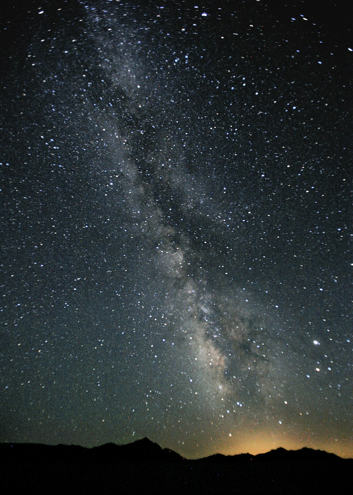

Welcome to the Milky Way Galaxy
The Milky Way is the galaxy that contains our Solar System. Inside it, our Sun and its planets, including Earth, orbit around the galaxy’s center. This website focuses on exploring the planets in our Solar System and how they exist within the Milky Way.

The Milky Way is the barred spiral galaxy that contains our Solar System, including the Sun and all eight planets. Our system is located in the Orion Arm, a smaller spiral feature within the galaxy, and it orbits the galactic center over millions of years. This makes the Milky Way the larger cosmic home of every planet on your website, linking each page back to one shared galactic structure.

From this position, Earth and the other planets are part of a much larger and more complex system made up of stars, gas, dust, and even mysterious dark matter that scientists are still trying to fully understand. The Milky Way galaxy provides the Solar System with its wider cosmic context, helping us realize that planets do not exist in isolation but are instead part of a vast and interconnected structure. This broader perspective allows us to better appreciate the relationships between celestial bodies and how gravity and other forces keep them in motion. It also highlights how small and fragile our Solar System is when compared to the immense scale of the universe. Understanding this connection not only deepens our knowledge of space but also inspires curiosity, encouraging people to explore, learn, and appreciate the complexity and beauty of the cosmos beyond our own planet.
Educational Video
This video explains the Milky Way galaxy.